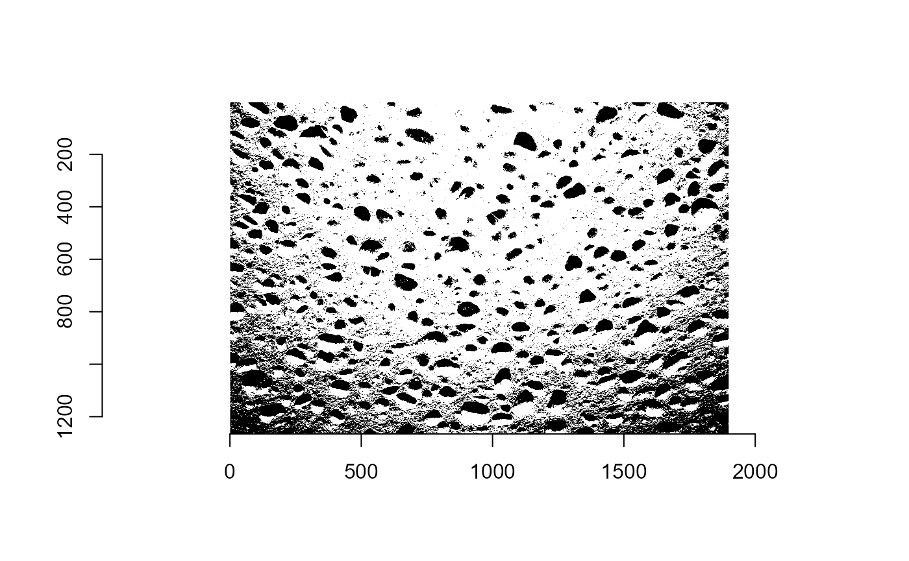

Stereology
load_img.RmdStereology
In stereology we try to estimate properties - such as volume, count, porosity, and surface area - from images that represent a lower dimension of our element(property) of interest. It could fx. be estimating the porosity in a yellow sponge from a 2D image or the number of cells in a given tissue sample (histological investigation).
Given the example of the porososity of the sponge - i.e., the volume of air bubbles divided by the total volume - we could use two approaches to estimate it:
We can use a point estimator, where points arranged in a grid are plotted on top of the image. Then we count the proportion of points which are positioned inside the air bubbles and use that as estimator of the porosity.
We can use a line estimator, where grid lines are plotted on top of the image. Here we calculated the proportion of the length of the grid lines which is covered by bubbles. This estimator takes two “clicks” per bubble in contrast to the point grid estimator, where the user instead clicks once per grid point.
Line estimator
In the following example we use the line estimator to find the porosity of the sponge. The function line_estimator_app() takes several arguments: object (default = NULL) is an image data frame in long format with columns x, y, and hexacode for color; path is the path to an image, and can be used instead of the object; grid_number decides the vertical lines (horisontal lines are separated by the same distance as the x-axis lines and might differ from the grid_number); and finally seed makes the random initialisation of the gridlines a bit less random.
- Rules of the line estimator:
- One must always assign two points to one air bubble.
- If one misses a point, then assign a new point on top (it is not possible to remove points).
- Always make sure lines are completed before using the estimates.
- Alternate between horisontal and vertical lines to reduce potential bias and obtain a better estimate.
Let’s try finding some points in a sponge. Follow the link, to see how the line estimator works.
Point estimator
Properties such as porosity or cross sectional area can also be estimated by imposing a grid of points on an image of the object of interest. The property is computed from the fraction of points that lie within the relevant areas. An application that lets you do this is also included in this package and can be launched by calling
It can also be accessed online here An image is uploaded by clicking “browse” and then selecting the file. When “update” is clicked the selected image will appear with a grid superimposed on it. Then relevant points are selected by clicking on them and when all the relevant points have been selected “estimate” is clicked. Now the fraction of selected points appears. All the selected points can be viewed in the “points” tab.
Theoretic exploration of an image.
The functions ‘bw_mat()’ and ‘th_i_est()’ are meant to be used to give the user theoretic estimators based on an image.
The function ‘bw_mat()’ takes two arguments the path where the image is stored and the threshold used for binary conversion. It returns a list with 2 elements. The first one is a matrix of 1s and 0s, which is generated by the given image. The second one is a plot of the black and white image, in order for the user to check if adjustments to the threshold are needed.
The function ‘th_i_est()’ provides with estimates about the white portions of the image provided both 2 types of grid, the point grid and the line grid. It takes 5 arguments:
- mtr: a matrix generated using the function ‘bw_mat()’. - x: the index of the pixel-row to start the grid, - y: the index of the pixel-column to start the grid, - lx: The amount of horizontal indices to be used, and - ly: The amount of vertical indices to be used.
The function then outputs a list containing the estimators.
Examples of theoretical exploration of images.
Below, there are two examples of the functions ‘bw_mat()’ and ‘th_i_est()’ being used.
Example A.
First, the image file to be used is loaded onto R, then the function bw_mat() is used and a 1899 by 1266 matrix is generated. In this case, the 0s and 1s represent whether the area is ‘filled’ by sponge or not respectively. In reference to the plot, the 0s represent the white area and the 1s the black one.
After using the generated matrix (‘a$matrix’), we start from pixel/entry (x=)700 and create (lx=)18 points/lines on the horizontal direction. For the vertical direction, we start from pixel/entry (y=)500 and create (ly=)12 points/lines.
# Loading the image.
# To use a PNG/JPEG/BMP image stored on your computer try:
# path <- "~/images.png"
path <- system.file('extdata/sponge3.jpg',package='Stereology')
# Applying bw_mat().
a <- bw_mat(path)
str(a)
#> List of 2
#> $ img_mat: 'bw_img' num [1:1899, 1:1266] 1 1 1 1 1 1 1 1 1 1 ...
#> $ bw_img : 'cimg' num [1:1899, 1:1266, 1, 1] 0 0 0 0 0 0 0 0 0 0 ...
# Applying th_i_ests().
est_a <- th_i_ests(mtr = a$img_mat, x = 700, y = 500, lx= 18, ly = 12)
# Print all different outputs.
est_a
#> $point_mean
#> [1] 0.375
#>
#> $line_mean
#> [1] 0.3197077
#>
#> $point_var
#> [1] 0.002055961
#>
#> $v_lines_var
#> [1] 0.000346328
#>
#> $h_lines_var
#> [1] 0.0003616901
#>
#> $sum_lines_var
#> [1] 0.0007080181Example B.
In this example, we focus our attention on the threshold. We present the image under 3 different thresholds (0.75, 0.65 and 0.55 respectively) to highlight the fact that luminosity of the image plays an important part. Then, we observe the how different the estimators are in each case.
# Loading the image.
path2 <- system.file('extdata/smallsponge.jpg',package='Stereology')
# Applying bw_mat().
b <- bw_mat(path2, 0.75)
d <- bw_mat(path2, 0.65)
e <- bw_mat(path2, 0.55)
# The only pore in "e".
e$img_mat[160:175, 255:267]
#> [,1] [,2] [,3] [,4] [,5] [,6] [,7] [,8] [,9] [,10] [,11] [,12] [,13]
#> [1,] 0 0 0 0 0 0 0 0 0 0 0 0 0
#> [2,] 0 0 0 0 0 0 0 0 0 0 0 0 0
#> [3,] 0 0 0 0 0 0 0 0 0 0 0 0 0
#> [4,] 0 0 0 0 0 0 0 0 0 0 0 0 0
#> [5,] 0 0 0 0 1 1 1 1 1 1 1 0 0
#> [6,] 0 0 0 0 1 1 1 1 1 1 1 0 0
#> [7,] 0 0 0 0 1 1 1 1 1 1 1 1 0
#> [8,] 0 0 0 1 1 1 1 1 1 1 1 1 0
#> [9,] 0 0 0 0 1 1 1 1 1 1 1 1 0
#> [10,] 0 0 0 0 1 1 1 1 1 1 1 0 0
#> [11,] 0 0 0 0 1 1 1 1 1 1 1 0 0
#> [12,] 0 0 0 0 1 1 1 1 1 1 0 0 0
#> [13,] 0 0 0 0 0 0 1 1 0 0 0 0 0
#> [14,] 0 0 0 0 0 0 0 0 0 0 0 0 0
#> [15,] 0 0 0 0 0 0 0 0 0 0 0 0 0
#> [16,] 0 0 0 0 0 0 0 0 0 0 0 0 0
# Applying th_i_ests().
est_b <- th_i_ests(mtr = b$img_mat, x = 10, y = 20, lx= 5, ly = 5)
est_d <- th_i_ests(mtr = d$img_mat, x = 10, y = 20, lx= 5, ly = 5)
est_e <- th_i_ests(mtr = e$img_mat, x = 10, y = 20, lx= 5, ly = 5)
# Print just mean_p_hat and variance_p_hat.
tab <- matrix(c(est_b$point_mean, est_b$line_mean, est_b$point_var, est_b$v_lines_var, est_b$h_lines_var,
est_d$point_mean, est_d$line_mean, est_d$point_var, est_d$v_lines_var, est_d$h_lines_var,
est_e$point_mean, est_e$line_mean, est_e$point_var, est_e$v_lines_var, est_e$h_lines_var),
ncol=5, byrow=TRUE)
colnames(tab) <- c('Point Mean', 'Line Mean', 'Point Variance', 'Vertical Variance', 'Horizontal Variance')
rownames(tab) <- c('b','d','e')
tab <- as.table(tab)
tab
#> Point Mean Line Mean Point Variance Vertical Variance
#> b 1.600000e-01 1.295522e-01 6.084005e-03 6.838884e-04
#> d 1.200000e-01 3.044776e-02 1.466048e-03 1.550166e-04
#> e 0.000000e+00 0.000000e+00 3.627153e-05 3.308579e-06
#> Horizontal Variance
#> b 4.902605e-04
#> d 1.091768e-04
#> e 2.287593e-06